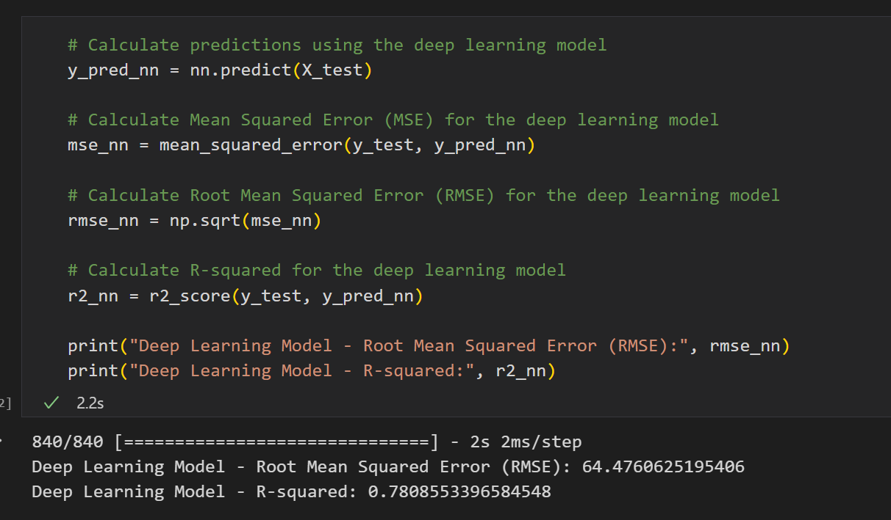

Model starting with 4 features reached 0.13 R-squared. Slowly added more columns and checked for correlation with price.
Using Random Forest Regressor the R-squared is 0.88

But for the neural network R-squared was 0.23 and after Optimization, the model reached 0.78 R-squared.
